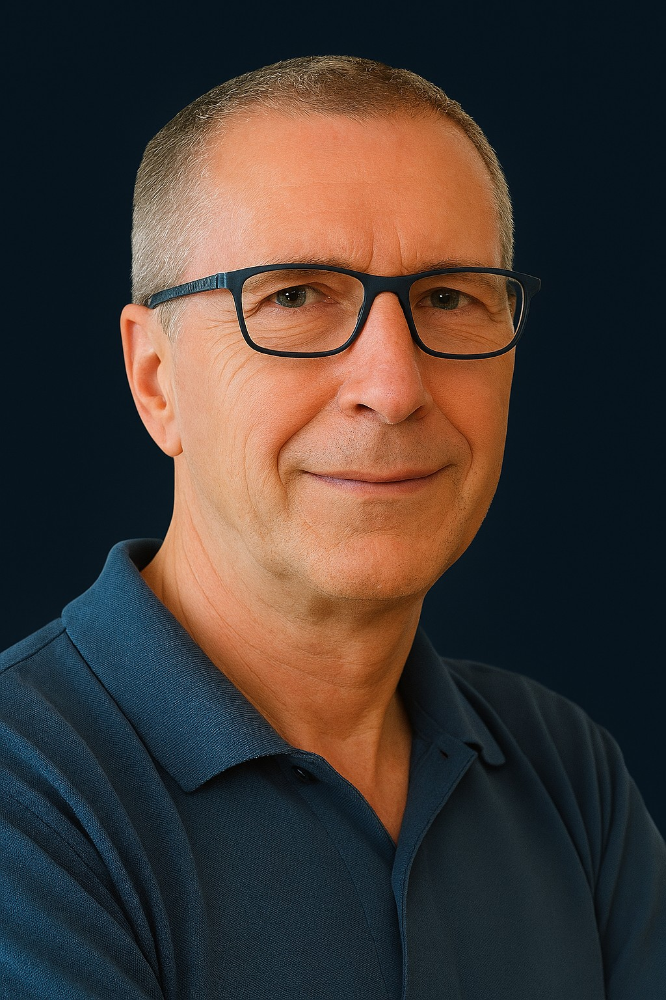

CEO / CCO Executive Leadership
Brought into technology and healthcare organizations to restore growth, simplify complexity, commercialize innovation, rebuild execution discipline, scale sales and operations, support fundraising, and lead execution hands-on.
25+ years leading mission-critical enterprise software, SaaS, and technology-enabled businesses across the US, Europe, and Israel.
Brought in when complexity requires clarity, execution, and momentum
Diagnose growth blockers, realign commercial strategy, and establish sustainable revenue momentum.
Translates complex products, platforms, and business models into clear positioning, pricing, messaging, roadmap focus, and aligned go-to-market execution.
Transform product capabilities into market-ready offerings with clear value propositions and sales motion.
Install operating rhythms, metrics, and leadership cadences that drive consistent results.
Build systems that enable growth beyond founder-led selling and ad-hoc execution.
Shape narrative, evidence, and operating posture that withstands scrutiny and inspires commitment.
Step into operating roles where leadership presence and direct involvement accelerate outcomes.
The Vector of Growth. Business transformation behaves like physics. Effort alone does not create movement. Organizations need a clear vector: purpose, direction, force, alignment, and execution. When people understand not only where the company is going, but why it matters, energy becomes focused contribution instead of noise.
A vector needs direction, force, and purpose. The first job is to simplify complexity and understand how value actually moves through the organization - from product to market, from strategy to execution, from customer need to commercial outcome. People commit when they understand the logic, the destination, and why their contribution matters.
At inflection points, assumptions must be challenged. The work is to strip away noise and focus only on the few priorities that combine into the strongest vector for visible, near-term wins.
Execution converts intent into movement. Cadence, accountability, and operating rhythm turn strategy into applied force - making progress measurable, visible, and repeatable.
Capital, time, and leadership attention should go only toward what commercializes, accelerates revenue, improves adoption, or saves money. Innovation is not valuable until the market can understand it, buy it, and use it.
Growth becomes sustainable when sales, product, operations, customer delivery, and leadership systems are aligned around a single vector. AI, process, and operating discipline matter only when they improve workflows, decisions, speed, cost structure, or customer outcomes.
Depth across commercial and operational dimensions
Executive leadership during critical organizational moments requiring experienced, steady hands.
Restructure market approach, value proposition, and revenue architecture for sustainable growth.
Build scalable sales processes, metrics, and team structures that perform consistently.
Navigate complex buying cycles, regulatory considerations, and enterprise procurement.
Shape compelling investment thesis and maintain clear, confident board-level communication.
Establish rhythms, systems, and cultural norms that drive disciplined execution.
Create clarity across leadership teams and streamline organizational complexity.
The moments when everything is at stake. Organizations face inflection points where the difference between success and stagnation depends on decisive executive action. These are the situations that require a fixer and builder.
Post-raise execution pressure
Pre-fundraising positioning and narrative
Stalled or inconsistent revenue growth
Founder-to-executive operating transition
Commercial underperformance despite strong assets
Enterprise sales complexity and long-cycle execution
Healthcare market access and adoption barriers
Product launches and market expansion
Strategy that has not become execution
The transformation that matters

Eyal Schneid is a Fixer & Builder CEO for technology-led organizations at critical inflection points, combining enterprise-scale leadership, commercial transformation, and hands-on execution to challenge assumptions, simplify complexity, and build momentum.
He brings 25+ years of international leadership across enterprise software, SaaS, digital transformation, and regulated or complex B2B markets, with sector experience spanning healthcare technology, Telecom, InsurTech, EduTech, and Training. His experience includes managing large global teams, leading business units with over $300M in P&L responsibility, and closing enterprise contracts of up to $750M.
Eyal is known for challenging default assumptions, simplifying the business layer, and forcing clarity where organizations have normalized complexity. His leadership combines strategic judgment with hands-on execution across commercialization, revenue growth, fundraising readiness, transformation, and scalable operations.
Under pressure, he quickly diagnoses organizational and commercial obstacles, challenges assumptions, focuses priorities, and builds execution momentum. He helps leadership teams move from ambiguity to action by aligning people around the why, installing operating discipline, and driving measurable outcomes with urgency and accountability.
Primary Domains
Speaking and thought leadership on healthcare AI, transformation, and operational application.
Academic and executive engagement around technology, healthcare, and leadership.
Public-market and growth-company leadership experience connected to enterprise value creation.
Perspectives on AI as an operational multiplier in clinical, commercial, and enterprise environments.
Early innovation work at the intersection of digital learning, technology adoption, and scalable knowledge systems.
Three ways to work together. Engagement structure depends on mandate, scope, timing, fit, and current commitments.
Full-time leadership for the right mandate. For companies seeking a long-term executive leader to drive commercialization, transformation, market expansion, fundraising readiness, scalable growth, or operational discipline.
Senior operating leadership without a permanent appointment. For organizations that need an experienced CEO, CCO, or commercial operating leadership during periods of transition, growth acceleration, transformation, or execution pressure.
Short-term executive leadership for defined high-impact assignments. For situations requiring concentrated senior hands-on leadership around specific business challenges.
For board, investor, or executive inquiries regarding growth recovery, commercialization, operating transformation, or leadership execution.